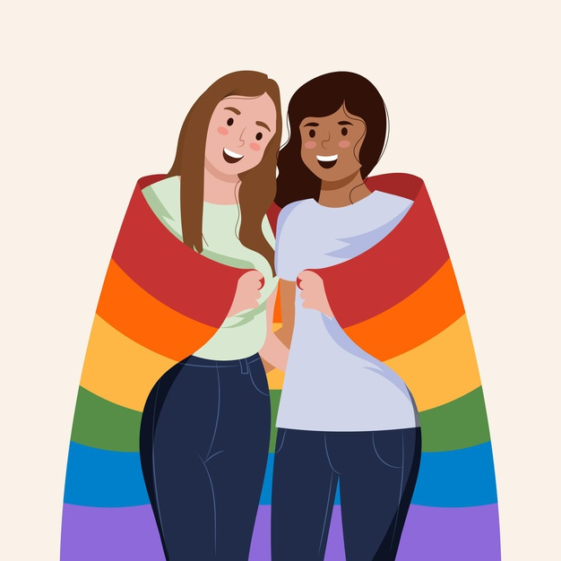
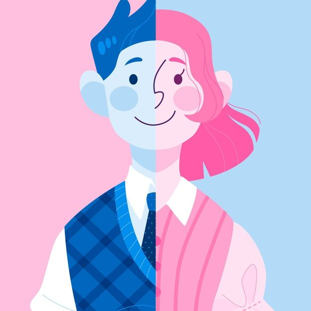
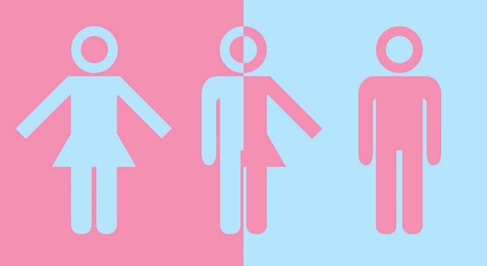

L

São mulheres que sentem atração afetiva/sexual pelo mesmo gênero, ou seja, outras mulheres.
G
São homens que sentem atração afetiva/sexual pelo mesmo gênero, ou seja, outros homens.
B
Diz respeito aos homens e mulheres que sentem atração afetivo/sexual pelos gêneros masculino e feminino
T

A transexualidade não se relaciona com a orientação sexual, mas se refere à identidade de gênero. Dessa forma, corresponde às pessoas que não se identificam com o gênero atribuído em seu nascimento. As travestis também são incluídas neste grupo. Porém, apesar de se identificarem com a identidade feminina constituem um terceiro gênero.
Q

Pessoas com o gênero 'Queer' são aquelas que transitam entre as noções de gênero, como é o caso das drag queens. A teoria queer defende que a orientação sexual e identidade de gênero não são resultado da funcionalidade biológica, mas de uma construção social.
I

A pessoa intersexo está entre o feminino e o masculino. As suas combinações biológicas e desenvolvimento corporal - cromossomos, genitais, hormônios, etc - não se enquadram na norma binária (masculino ou feminino).
A
Assexuais não sentem atração sexual por outras pessoas, independente do gênero. Existem diferentes níveis de assexualidade e é comum que estas pessoas não veem as relações sexuais humanas como prioridade.
+

O + é utilizado para incluir outros grupos e variações de sexualidade e gênero. Aqui são incluídos os pansexuais, por exemplo, que sentem atração por outras pessoas, independente do gênero.